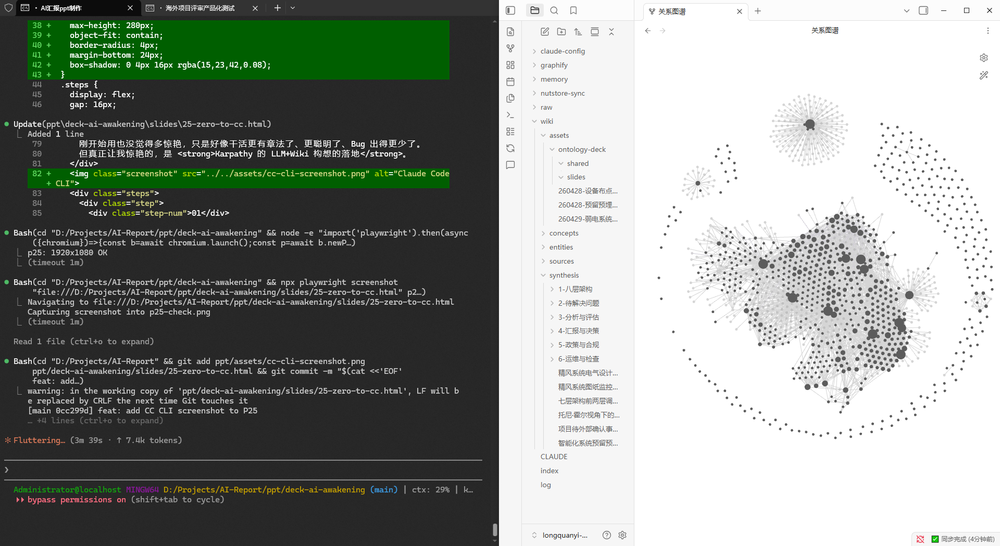

Stage 4 · 落地
用 CC+OB 落地垃圾站项目
阶段三龙虾做初设时翻了车。到了深化设计阶段，换上了 CC + OB。
先给这个项目搭了一个完整的知识库——业态资料、政策文件、参考案例、客户访谈、内部讨论纪要，全部沉到 OB 里。
先给这个项目搭了一个完整的知识库——业态资料、政策文件、参考案例、客户访谈、内部讨论纪要，全部沉到 OB 里。

挖掘痛点
→
揭示能力缺口
→
设计功能
→
配置软硬件
→
测算成本
→
计算报价
一条龙下来，整个工作流跑通了。再一个点一个点地落地——每一段都有 OB 里的资料兜底，每一段都有 CC 帮我做交叉检索。
我们已经在跟设计院对接，开始讨论预留预埋、方案深化——注意，内容的基础版本都是 CC 基于 OB 知识库生成的。
我们已经在跟设计院对接，开始讨论预留预埋、方案深化——注意，内容的基础版本都是 CC 基于 OB 知识库生成的。